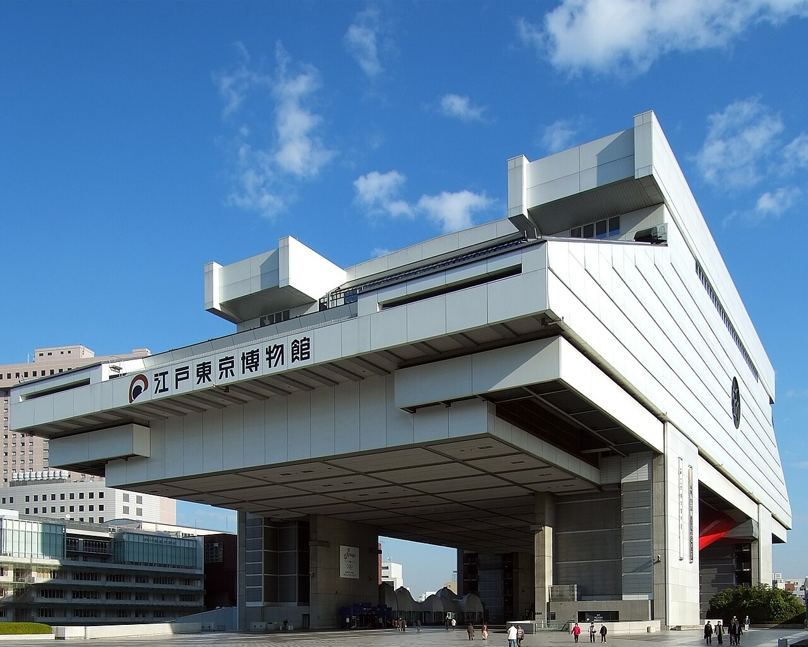
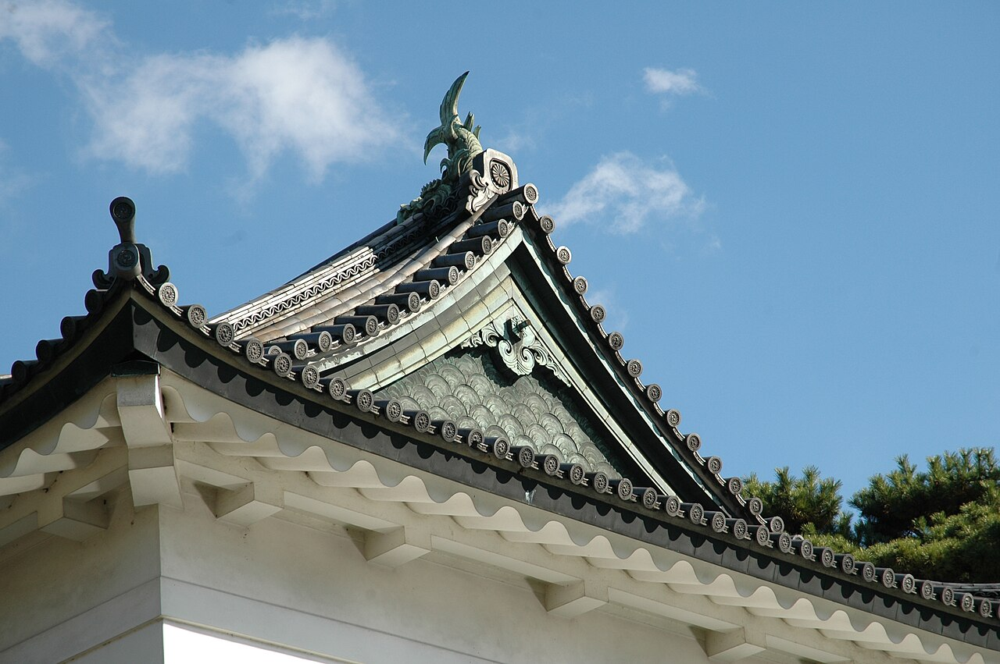

Исторические и справочные гербы


Tokyo
Путеводитель. Объектов в этом выпуске: 18.
OTIUM — практика нарочитого досуга. В античном смысле otium — не побег от работы, а время, когда внимание возвращается к памяти, пейзажу и мысли — без прикладного дедлайна.
Мы выстраиваем маршруты для неспешного присутствия, а не для чек-листа достопримечательностей: важно быть в месте, а не «потреблять» виды.
OTIUM — не туроператор. Это приглашение пройтись, остановиться и оставить маршрут незавершённым, если свет на фасаде заслуживает ещё минуты.
Исторические и справочные гербы
Путеводитель. Объектов в этом выпуске: 18.
Токио — столица Японии и крупнейшая агломерация мира на острове Хонсю.
От замка Эдо сёгуната к имперской столице Мэйдзи и мегаполису после 1945 года: небоскрёбы Синдзюку, храмы Асакуса и сеть метро. Токио сочетает традиционные праздники с индустрией аниме, моды и гастрономии.
Землетрясание 1923 года и бомбардировки 1945 года разрушали город; восстановление и Олимпиада 1964 года показали технологический подъём. Токио сочетает безопасность, культуру повседневности и глобальную роль японской экономики и мягкой силы.
Edo-Tokyo Museum.jpg


Public garden over old honmaru foundations with guardhouses and seasonal flower beds.
Imperial Household Agency opened portions after post-war reconstruction stabilised.
Quietest moat walk inside the office core.
皇居外苑

East Gardens open on fixed schedules over Edo-period foundations; the Nijūbashi stone bridge is a ceremonial photo stop on the outer moat.
Tokugawa shogunal castle became the imperial residence after 1868; wartime loss led to restrained replacement architecture.
Green moat ring separating Marunouchi office towers from quiet gravel plazas.
Imperial Palace, Tokyo JP.jpg


Godzilla head and cinema towers mark Tokyo's densest nightlife warren east of the station.
Black-market stalls evolved into host clubs and cinemas under yakuza-era lore now policed.
Midnight energy contrast to daytime office grids.
Matsuke Heikichi - Nogaku zue - Walters 95271.jpg

明治神宮

Shinto shrine in an urban forest honoring Emperor Meiji and Empress Shoken. Gravel paths and massive torii quiet the city noise behind Harajuku.
Planted groves replaced open training grounds; post-war reconstruction preserved the axial layout.
Green buffer between Yoyogi Park crowds and contemplative ritual space.

First forest torii framing gravel paths that quiet Harajuku crowds into ritual space.
Planted groves were a Meiji-era nation-building landscape project.
Everyday Shinto procession scenery inside the Yamanote loop.
浅草寺

Tokyo's oldest major temple precinct, entered through the giant red Kaminarimon with its paper lantern. Nakamise shops line the approach.
Legends tie the site to fishermen finding a Kannon image; Edo-period urbanisation made Asakusa a festival quarter.
Traditional counterweight to Shibuya's neon modernity.

Ground-level scramble view toward Hachikō plaza and Shibuya Sky deck queues.
Station rebuilds widened sidewalks for safety with tourism growth.
Street-level kinetic complement to aerial crossing photos.
渋谷スクランブル交差点

Pedestrian scramble where diagonal crossings fill the entire junction. Station rebuilds and sky decks reframed viewing angles.
Grew with Shibuya Station's role as a youth fashion and nightlife hub after the 1960s.
Tokyo's most filmed pedestrian kinetic sculpture.
St. Mary's Cathedral Tokyo.jpg

Tokyo Camii.jpg

Tokyo Church of Christ.JPG


Tallest structure in Japan with glass decks over Sumida rooftops and river bends.
Digital TV transition required a mast above older Tokyo Tower height.
East Tokyo orientation spike visible across the Kanto plain.
東京タワー

Orange-and-white communications tower and observation landmark in Shiba Park. Main and top decks give contrasting views over the bay and midtown.
Post-war symbol of reconstruction; it later shared skyline prominence with taller Shinjuku and Roppongi towers.
A mid-city orientation point between Shinagawa and the Imperial Palace.

Knife shops, tamagoyaki stalls, and sushi queues surviving wholesale market relocation.
Outer ring stayed active when inner wholesale moved to Toyosu.
Gastronomic morning ritual near Ginza shopping.
上野公園

Park cluster holding the Tokyo National Museum, Ueno Zoo, concert halls, and lotus ponds—crowded during cherry blossom weeks.
Kaneiji temple lands became a public park in the Meiji period, anchoring high culture institutions north of the station.
Single metro stop bundles Japan's flagship art collections with festival atmosphere.